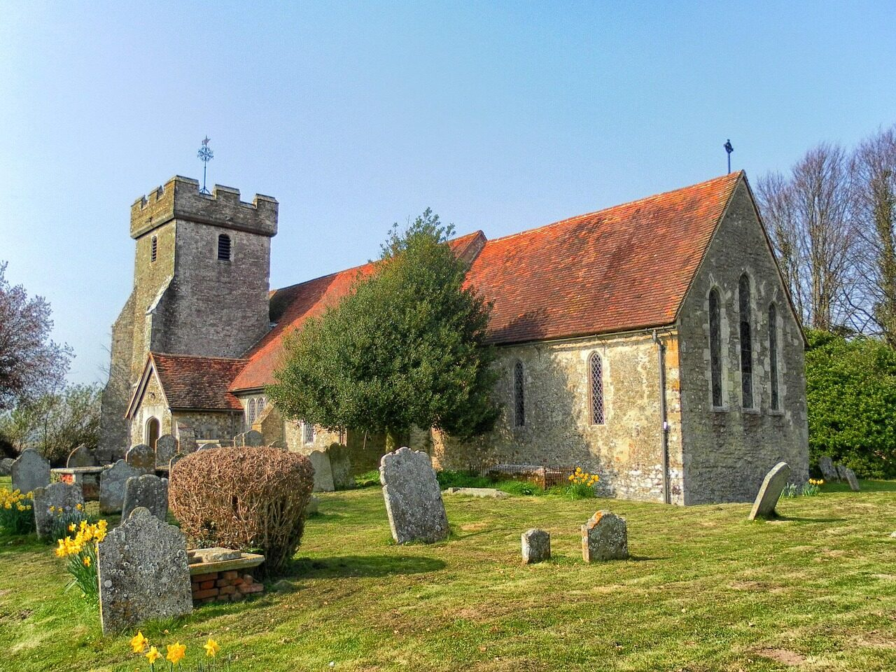

Since 1878
Four hundred years of Sunday mornings.
English full-circle ringing began in the 1600s, and the Weald still has more rings of bells than almost anywhere. Our guild keeps them ringing: we teach new ringers, look after the bells, and ring for services, weddings and the odd coronation.
Nobody plays a tune. Each ringer swings one bell all the way round, mouth up to mouth up, and the band changes the order the bells strike in, row by row, following a pattern called a method. It is part team sport, part maths, and very good for the arms.
212towers with bells
1,100members ringing
94learners this year